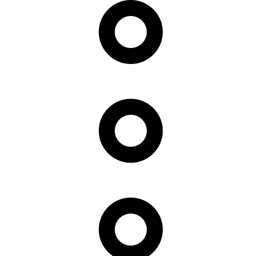

<div class="container-fluid">
    <p>tablero works!</p>
    <div class=" border">


        <div cdkDropListGroup *ngIf="tablero" class="row flex-nowrap" style="overflow-x:auto;min-height: 90.3vh;">
            <!--Listas de BD-->
            <div *ngFor="let lista of tablero.listas; let idTablero = index" class="example-container col-lg-2 border">
                <div class="d-flex justify-content-between align-items-center justify-content-center">
                    <input type="text" class="form-control mt-2 ms-2 lista-input" placeholder="{{lista.nombre}}"
                        aria-label="Example text with button addon" aria-describedby="button-addon1"
                        (blur)="updateLista(lista.nombre, lista.id, lista.orden)" (keyup.enter)="updateLista(lista.nombre, lista.id, lista.orden)" [(ngModel)]="lista.nombre" />

                    <!-- Delete Lista -->
                    <div class="dropdown ps-2">
                        <button class="btn" data-bs-toggle="dropdown" aria-expanded="false">
                            
                        </button>
                        <ul class="dropdown-menu">

                            <li><button class="dropdown-item" type="button"
                                    (click)="eliminarLista(lista.id)">Eliminar</button></li>
                        </ul>
                    </div>
                </div>

                <div cdkDropList [cdkDropListData]="lista.tasks" class="example-list"
                    (cdkDropListDropped)="dropTasks($event)">
                    <div *ngIf="lista.tasks.length === 0; else tareasTemplate" class="mt-4 text-center">No hay tareas
                    </div>
                    <ng-template #tareasTemplate>
                        <div class="example-box " *ngFor="let task of lista.tasks;let i =  index" cdkDrag>
                            {{task.nombre}}</div>
                    </ng-template>
                </div>

                <!-- Crear Task -->
                <div *ngIf="!creandoTask " class="btn btn-primary" style="  width: 100%;" (click)="addTask(idTablero)">
                    Crear +</div>
                <div *ngIf="creandoTask && idTablero == idRowTask" class="ms-3 me-3">
                    <div><input type="text" [(ngModel)]="newTask" style="width: 100%;" placeholder="Nueva tarea" />
                    </div>
                    <div class="btn btn-primary align-items-start mb-2 mt-2" (click)="createTask(newTask, idTablero)">
                        Agregar</div>
                </div>
                <!-- Fin crear Task  -->

            </div>
            <!--Fin Lista-->
            
            <!-- Crear Lista -->
            <div class="example-container col-lg-2 border">
                <h2 class="ms-2 mt-2">Añadir nueva lista</h2>
                <div *ngIf="!creandoLista" class="btn btn-primary" style="  width: 100%;" (click)="addLista()">Crear +
                </div>
                <div *ngIf="creandoLista" class="ms-3 me-3">
                    <div><input type="text" [(ngModel)]="newLista" style="width: 100%;" placeholder="Nueva lista" />
                    </div>
                    <div class="btn btn-primary align-items-start mb-2 mt-2"
                        (click)="createLista(newLista, tablero.id)">Agregar
                    </div>
                </div>
            </div>
            <!-- Fin crear Lista -->

            <!-- <div class="example-container col-lg-2 border">
                <h2 class="ms-2 mt-2">Done</h2>
                <div cdkDropList [cdkDropListData]="done" class="example-list" (cdkDropListDropped)="drop($event)">
                    <div class="example-box" *ngFor="let item of done" cdkDrag>{{item}}</div>
                </div>
                <div class="example-box">Crear +</div>
            </div> -->
        </div>
    </div>
</div>